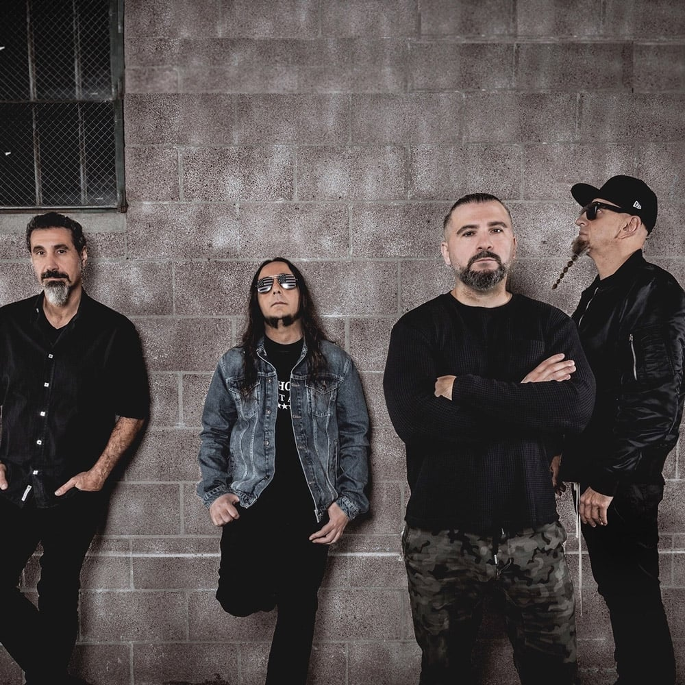
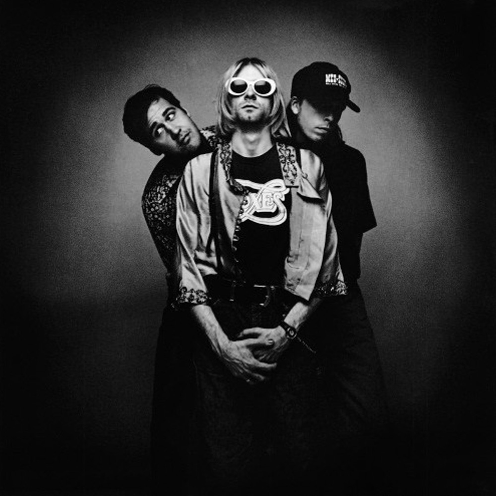
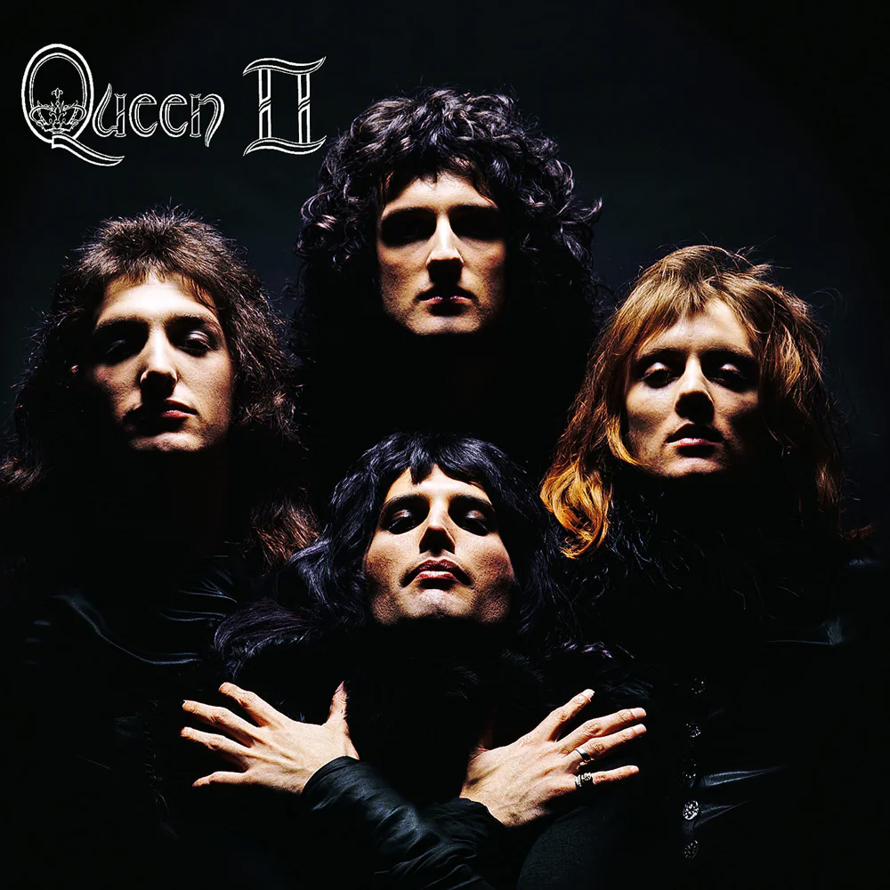
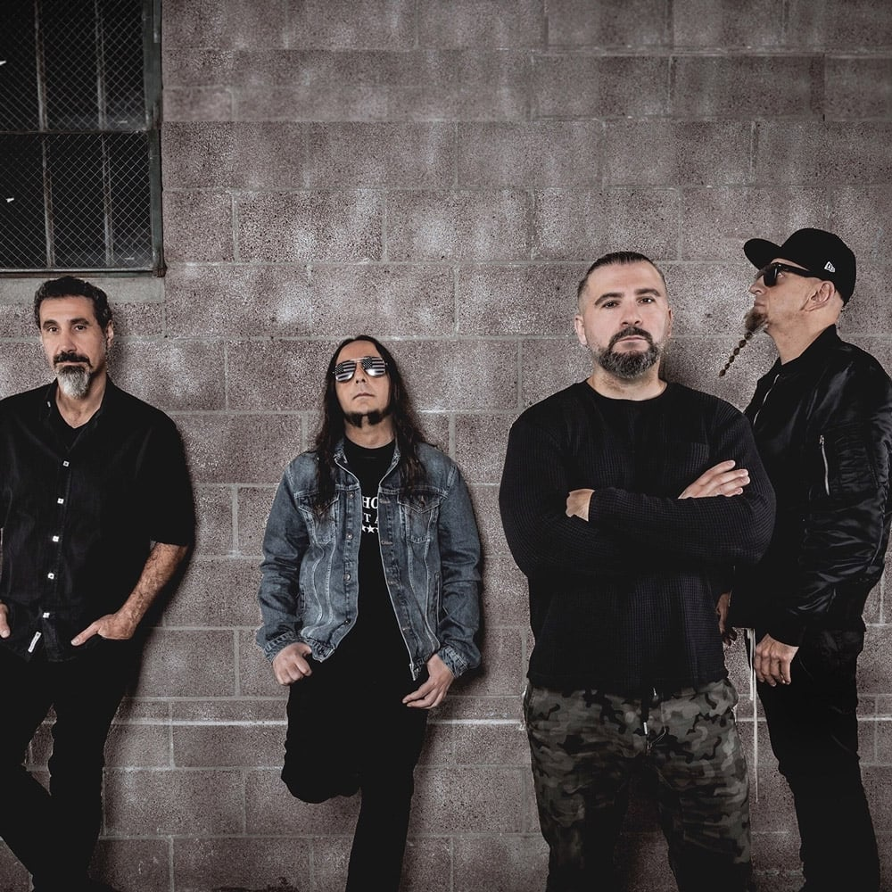
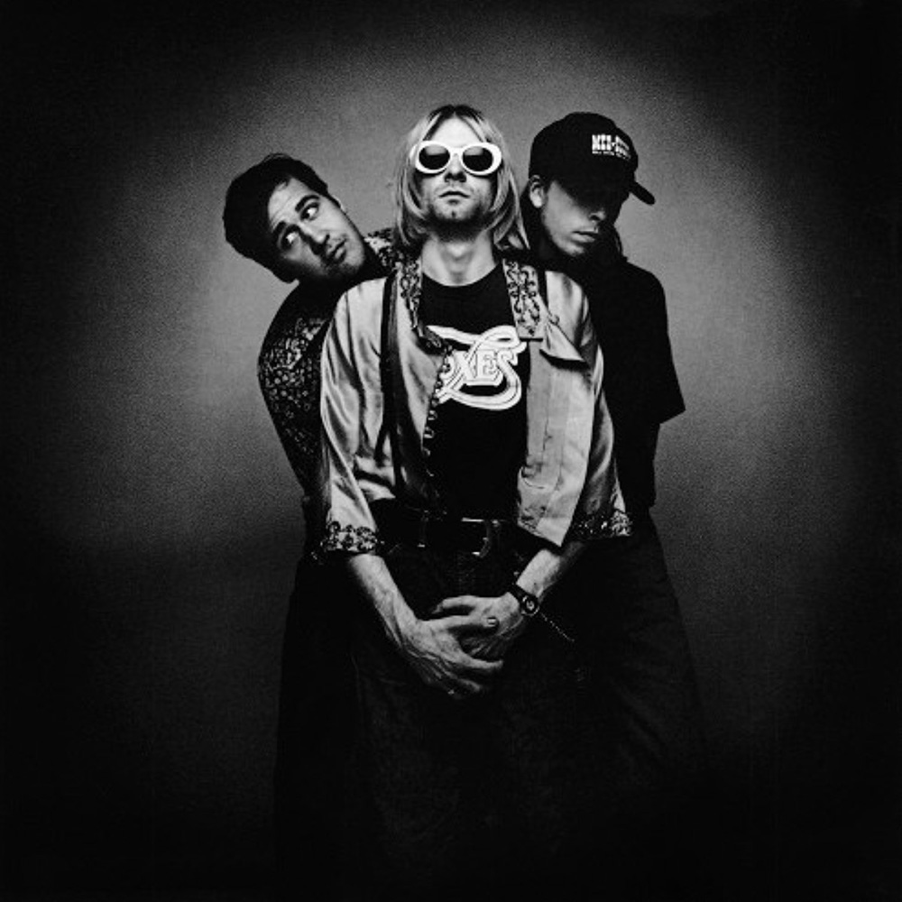
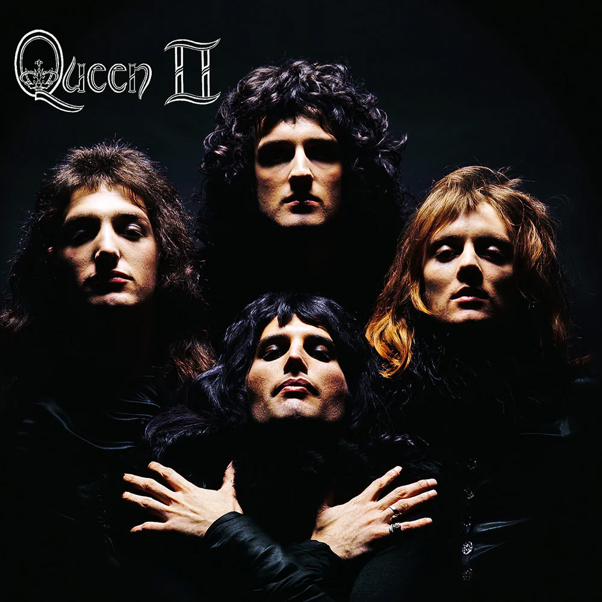

Slipknot
Slipknot to amerykański zespół metalowy założony w 1995 roku w Des Moines w stanie Iowa. Grupa słynie z ekstremalnie ciężkiego brzmienia, agresywnej energii scenicznej oraz charakterystycznych masek noszonych przez muzyków. Ich muzyka łączy elementy nu metalu, metalu alternatywnego i groove metalu, często poruszając mroczne i emocjonalne tematy. Slipknot zdobył światową popularność dzięki albumom takim jak Slipknot, Iowa czy All Hope Is Gone. Zespół uznawany jest za jeden z najważniejszych i najbardziej wpływowych projektów metalowych XXI wieku.
Więcej (zewnętrzny)
Korn
Korn to amerykański zespół metalowy założony w 1993 roku w Bakersfield w Kalifornii. Grupa jest uznawana za jednego z prekursorów nu metalu, łącząc ciężkie, nisko strojone gitary z elementami hip-hopu i alternatywy. Teksty zespołu często poruszają osobiste i emocjonalne tematy, takie jak samotność, trauma czy bunt. Korn zdobył ogromną popularność dzięki albumom Korn, Life Is Peachy oraz Follow the Leader. Zespół wywarł znaczący wpływ na rozwój nowoczesnej muzyki metalowej.
Więcej (zewnętrzny)
Gorillaz
Gorillaz to brytyjski wirtualny zespół muzyczny założony w 1998 roku przez Damona Albarna i Jamiego Hewletta. Grupa wyróżnia się animowanymi postaciami, które zastępują prawdziwych muzyków w teledyskach i materiałach promocyjnych. Muzyka Gorillaz łączy wiele gatunków, m.in. alternatywny rock, hip-hop, elektronikę i pop. Zespół zdobył światową popularność dzięki albumom takim jak Demon Days i Plastic Beach. Gorillaz są cenieni za innowacyjne podejście do muzyki oraz oryginalną oprawę wizualną.
Więcej (zewnętrzny)
Limp Bizkit
Limp Bizkit to amerykański zespół nu metalowy założony w 1994 roku w Jacksonville na Florydzie. Grupa zasłynęła połączeniem ciężkich gitarowych riffów z rapowanym wokalem Freda Dursta. Ich teksty często poruszają temat buntu, emocji i problemów młodego pokolenia. Limp Bizkit zdobył ogromną popularność na przełomie lat 90. i 2000. dzięki albumom Significant Other oraz Chocolate Starfish and the Hot Dog Flavored Water. Zespół miał duży wpływ na rozwój i popularyzację nurtu nu metal.
Więcej (zewnętrzny)
System Of A Down
System of a Down to ormiańsko-amerykański zespół metalowy założony w 1994 roku w Glendale w Kalifornii. Grupa zasłynęła unikalnym połączeniem ciężkich riffów, awangardowych aranżacji i politycznie zaangażowanych tekstów. Ich muzyka obejmuje hity takie jak „Chop Suey!”, „Toxicity” i „B.Y.O.B.”. System of a Down wyróżniał się nie tylko charakterystycznym wokalem Serja Tankiana, ale także energicznymi koncertami na żywo. Zespół uznawany jest za jeden z najbardziej wpływowych i oryginalnych projektów metalowych przełomu XX i XXI wieku.
Więcej (zewnętrzny)
Nirvana
Nirvana to amerykański zespół rockowy założony w 1987 roku w Aberdeen w stanie Waszyngton przez Kurta Cobaina i Krista Novoselica. Grupa jest jednym z najważniejszych przedstawicieli nurtu grunge, łączącego punk rock z alternatywnym rockiem. Ich muzyka charakteryzuje się surowym brzmieniem gitar, emocjonalnym wokalem i introspektywnymi tekstami. Nirvana zdobyła światową sławę dzięki albumowi Nevermind i singlowi „Smells Like Teen Spirit”. Zespół wywarł ogromny wpływ na muzykę lat 90. i do dziś pozostaje ikoną kultury alternatywnej.
Więcej (zewnętrzny)
Queen
Queen to brytyjski zespół rockowy założony w 1970 roku w Londynie, z legendarnym wokalistą Freddiem Mercurym. Grupa zasłynęła unikalnym połączeniem rocka, opery i muzyki pop oraz widowiskowymi aranżacjami. Ich muzyka obejmuje hity takie jak „Bohemian Rhapsody”, „We Will Rock You” i „Somebody to Love”. Queen wyróżniał się nie tylko oryginalnym brzmieniem, ale także efektownymi koncertami na żywo. Zespół uznawany jest za jeden z najbardziej wpływowych i kultowych w historii muzyki rockowej.
Więcej (zewnętrzny)
 




